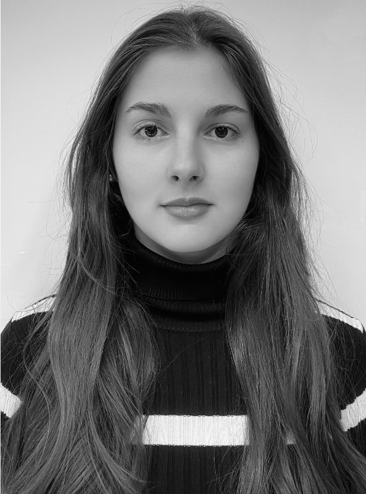

Valentina Zaldivar Calvanese

- Chilena
- 22 años
- Estudiante de Periodismo Pontificia Universidad Católica de Chile
Estudios
Enseñanza básica y media en Redland School (2007 - 2020)
Primer año de Derecho Universidad de los Andes (2021)
Periodismo Pontificia Universidad Católica de Chile (2022 - a la fecha)
Experiencia laboral